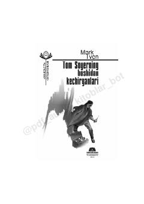

TSSho‘x va topqir bola Tom Soyerning qiziqarli va hayajonli sarguzashtlari.
Mark Tvenning ushbu mashhur asari sho‘x va uddaburon bola Tom Soyerning qiziqarli sarguzashtlari haqida hikoya qiladi. Asar davomida Tomning turli qiyinchiliklarni yengib o‘tishi, do‘stlari bilan bo‘lgan munosabatlari va shaharchadagi voqealar tasvirlanadi.